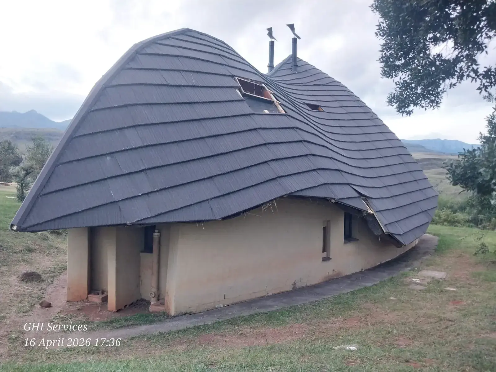
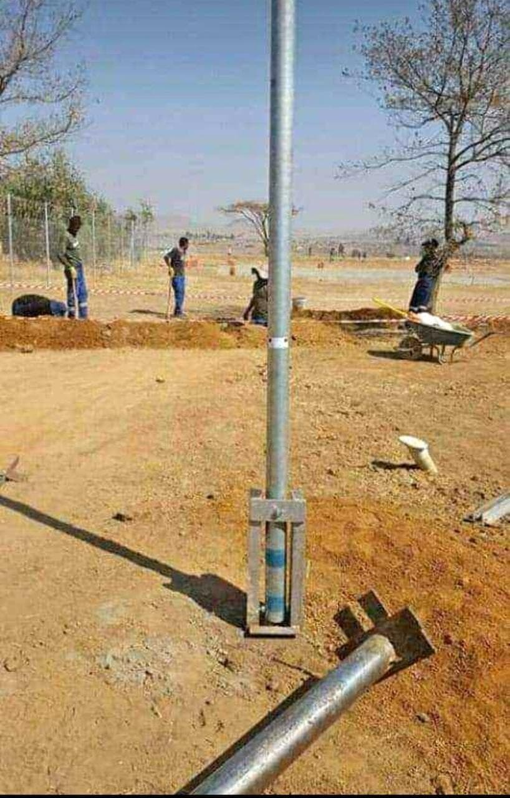

Recent Work
Thatch Roof Conversion to Tiles

Thatch tiles (often steel-based, such as Harvey Thatch tiles) are durable, low-maintenance, fire-resistant, and insect-proof alternatives to traditional thatch roofs. They feature a stone-coated finish that mimics the look of thatch while weighing only 0.6 kg/m² — offering long-term savings, reduced fire risk, and enhanced security for homeowners.
Lightning Conductor Installation, Servicing and Installations

Lightning rod installation involves placing copper or aluminium air terminals at the highest points of a structure — roof ridges, chimneys — connected via conductors to ground rods buried at least 10 feet deep, in line with standards like NFPA 780. Expert installation ensures a safe, low-resistance path for lightning strikes, protecting your property against fire and structural damage.
We work across Gauteng. Get in touch for a free consultation and quote.
Get a Free Quote